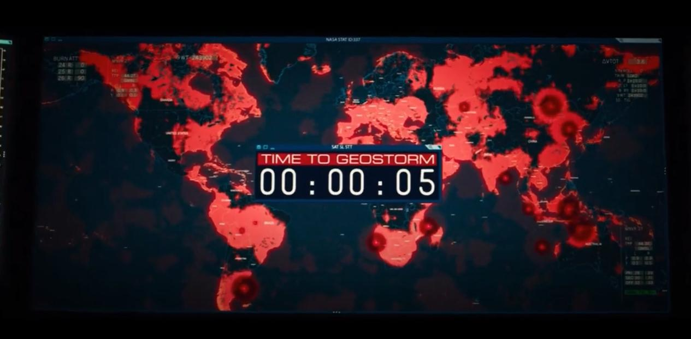
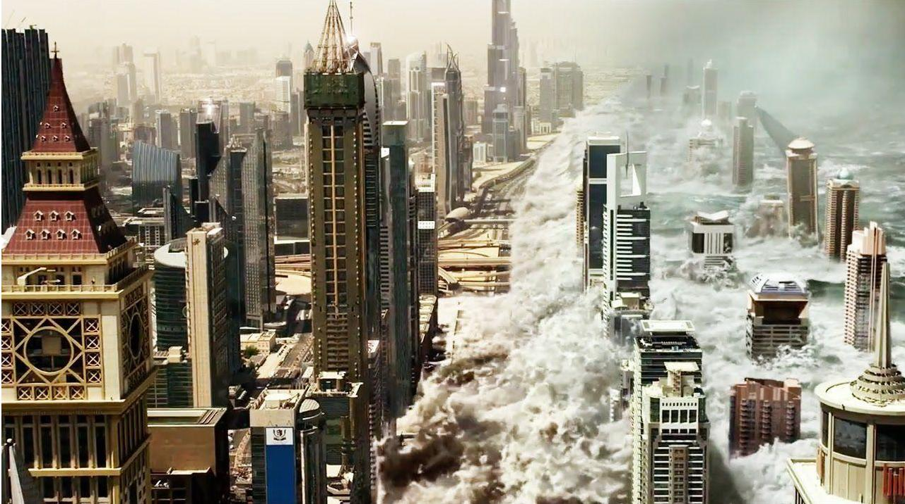
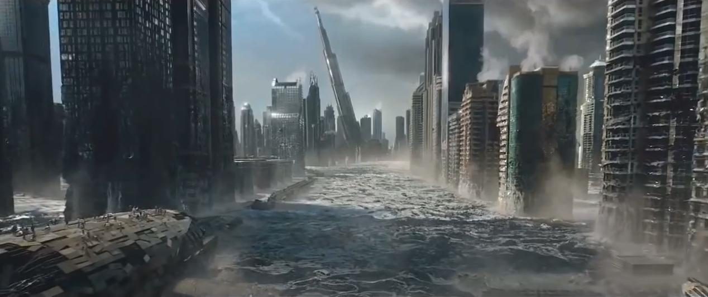
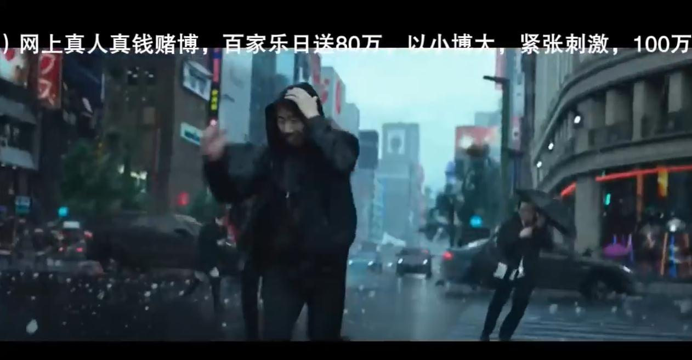

Geostorm (2017) is a high-energy sci-fi movie that explores the idea of using advanced technology to prevent natural disasters—but what happens when that technology backfires?
The movie is set in a future where the world has come together to create a global network of satellites called "Dutch Boy" to control the weather. The satellites are supposed to stop hurricanes, floods, and other extreme weather events by manipulating the atmosphere. But, when these satellites start malfunctioning, they cause disasters instead, triggering massive storms that threaten to destroy the planet.
The protagonist, Jake Lawson (Gerard Butler), is the scientist who originally designed the Dutch Boy system. After a series of deadly weather events, Jake is pulled back into the mission to fix the system. Along with his brother Max (Jim Sturgess), they uncover a plot to sabotage the satellites. As the weather gets crazier and more destructive, Jake must find a way to stop the man-made disaster before it becomes a true global "Geostorm.
What makes Geostorm exciting is its spectacular visual effects hurricanes, tornadoes, and even giant tsunamis that seem to tear the world apart. These scenes keep the action fast-paced and tense, but the movie also deals with deeper issues, like how much control humanity should have over nature. While technology can offer solutions, the film shows how messing with something as powerful as the planet’s weather could lead to chaos.
Despite all the thrills, Geostorm isn't exactly scientifically accurate. Critics have pointed out that the plot is far-fetched, and the science behind the Dutch Boy system is questionable at best. But that doesn’t take away from the excitement of the film. It’s an entertaining action-packed ride that also serves as a cautionary tale about the risks of relying too heavily on technology to control natural forces.
In the end, Geostorm is a reminder that while technology can help solve problems, it can also create new ones, ones we might not be ready to handle. Whether or not you buy into the science, the movie’s message about the dangers of playing God with nature is one worth thinking about.
1.The Final Countdown to Stop the Geostorm
2. The Miami Flood
3. Burj Khalifa affected by the Miami Flood
4. They Kidnapped The President For His Kill Code
5. The Storm Collide in Tokyo
